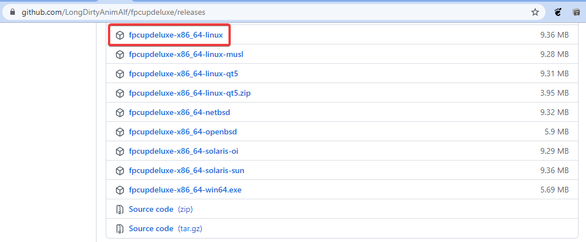
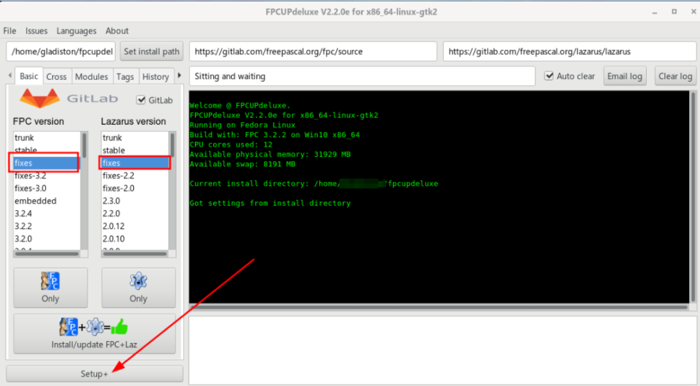
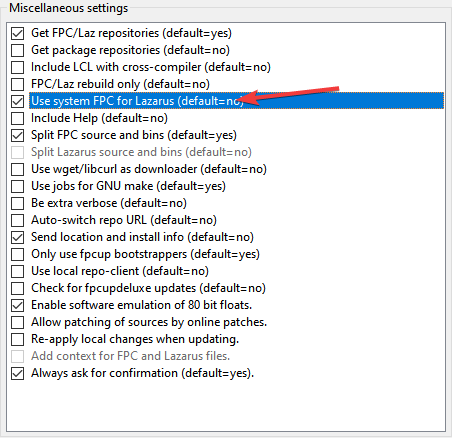
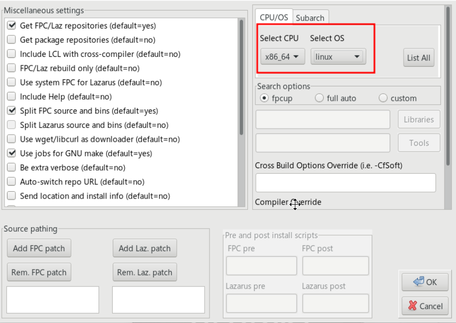

Introdução
O fpcupdeluxe é uma ferramenta poderosa para instalação do Lazarus e Free Pascal Compiler (FPC) no Linux. Diferente da instalação via repositórios do sistema, o fpcupdeluxe permite uma instalação homeuser, ou seja, podemos instalar, configurar e usar sem permissões especiais de administrador. Esta abordagem oferece maior controle sobre o ambiente de desenvolvimento e permite manter múltiplas versões do Lazarus e FPC simultaneamente.
Esta instalação é mais simples que uma instalação manual completa, porque o fpcupdeluxe automatiza todo o processo de download, compilação e configuração. Usaremos o fpcupdeluxe para instalar o FPC e Lazarus no diretório HOME do usuário, mantendo tudo isolado e portável.
Primeiro tenha certeza de ter instalado o compilador e código fontes do FPC, caso não tenha, siga este link: Instalação no Linux: Instalar o FPC a partir dos repositórios.
Com o FPC instalado no seu sistema, você apenas baixa ou compila o Lazarus sem essa dependência monstruosa. O download e compilação no caso fpcupdeluxe será menor e, convenhamos, o FPC será algo que você não precisa modificar; deixá-lo instalado no sistema permitirá que a própria distro se encarregue de atualizá-la para você.
Ao executar programas construídos no Lazarus no ambiente Linux, pode surgir a seguinte mensagem de dependência no terminal:
Gtk-Message: Failed to load module "pk-gtk-module"
O programa executa normalmente, mas a falta dessa dependência pode indicar que algum aspecto visual não está como deveria. Para corrigir o problema, execute:
sudo -i
echo "/usr/lib64/gtk-3.0/modules" >> /etc/ld.so.conf.d/pk-gtk.conf
echo "/usr/lib64/gtk-2.0/modules" >> /etc/ld.so.conf.d/gtk2.conf
ldconfigOutra mensagem de erro que pode ocorrer é esta:
Gtk-Message: Failed to load module "canberra-gtk-module"
Isso não é um erro fatal, apenas um aviso de que o módulo de sons do GTK não está instalado. Para remover este aviso em sistemas Debian-like (Ubuntu, Mint):
sudo apt install libpango1.0-dev libcairo2-dev libatk1.0-dev libgdk-pixbuf-xlib-2.0-dev
Caso esteja usando o ambiente KDE ou pretenda compilar a IDE usando qt, execute também:
sudo apt install -y qtbase5-dev
Esta usando ambiente que usa gtk(GNOME, XFCE, LXDE, Cinnamon, etc...)?, então execute:
sudo apt install libgtk2.0-dev libpango1.0-dev libcairo2-dev libatk1.0-dev libgdk-pixbuf-xlib-2.0-dev
sudo apt install -y libcanberra-gtk-common-dev
sudo apt install -y libcanberra-gtk3-module
Em sistemas RedHat-like (Fedora):
sudo dnf install -y qt5pas-devel qt5-qtbase-devel # caso use KDE
sudo dnf install -y libcanberra-gtk2 libcanberra-gtk3 # caso use GNOMESempre revise as dependências na página oficial do fpcupdeluxe.

O arquivo baixado é um executável. No terminal, dê permissão de execução e rode-o (exemplo para versão GTK):
chmod +x fpcupdeluxe-x86_64-linux
./fpcupdeluxe-x86_64-linuxNa tela do instalador, selecione fixes para FPC e Lazarus Version, e clique em Setup+ para ajustar os parâmetros:

Marque a opção Use system FPC for Lazarus conforme a imagem abaixo:


Confirme com OK e clique em Install/Update FPC+Laz. A instalação é demorada. Ao final, um atalho será criado no menu do sistema e o script Lazarus_fpcupdeluxe estará na sua pasta HOME.
Vídeo Tutorial
Assista abaixo à demonstração:
Instalar o Lazarus-IDE com fpcupdeluxe no Linux
ASSISTIR VÍDEO NO YOUTUBEVantagens da Instalação Homeuser
A instalação usando fpcupdeluxe no Linux oferece várias vantagens:
- Sem permissões de root: Tudo é instalado no diretório HOME do usuário, sem necessidade de privilégios administrativos
- Isolamento do sistema: A instalação não interfere com pacotes do sistema ou outras instalações do Lazarus
- Múltiplas versões: Você pode ter várias versões do Lazarus e FPC instaladas simultaneamente
- Portabilidade: A instalação pode ser facilmente copiada ou movida para outro sistema
- Controle total: Você escolhe exatamente quais versões e componentes instalar
- Uso do FPC do sistema: Ao marcar "Use system FPC for Lazarus", você aproveita o FPC já instalado via repositórios, economizando tempo de compilação
Resolução de Problemas Comuns
Se você encontrar problemas durante a instalação ou uso do Lazarus instalado via fpcupdeluxe:
- Verifique se todas as dependências do GTK estão instaladas corretamente
- Certifique-se de que o FPC do sistema está funcionando corretamente
- Revise as permissões do diretório HOME onde o Lazarus foi instalado
- Consulte a documentação oficial do fpcupdeluxe para problemas específicos
Conclusão
O fpcupdeluxe é uma excelente opção para instalar o Lazarus no Linux, especialmente para desenvolvedores que precisam de mais controle sobre o ambiente de desenvolvimento ou que trabalham com múltiplas versões do compilador. A instalação homeuser elimina a necessidade de permissões administrativas e mantém tudo isolado no diretório do usuário.
Ao usar o FPC do sistema em conjunto com o Lazarus compilado pelo fpcupdeluxe, você obtém o melhor dos dois mundos: um compilador mantido pela distribuição Linux e uma IDE atualizada e configurada conforme suas necessidades específicas.
Lembre-se sempre de usar o script Lazarus_fpcupdeluxe para iniciar o Lazarus, pois ele garante que todas as configurações e variáveis de ambiente estejam corretas para a instalação homeuser.